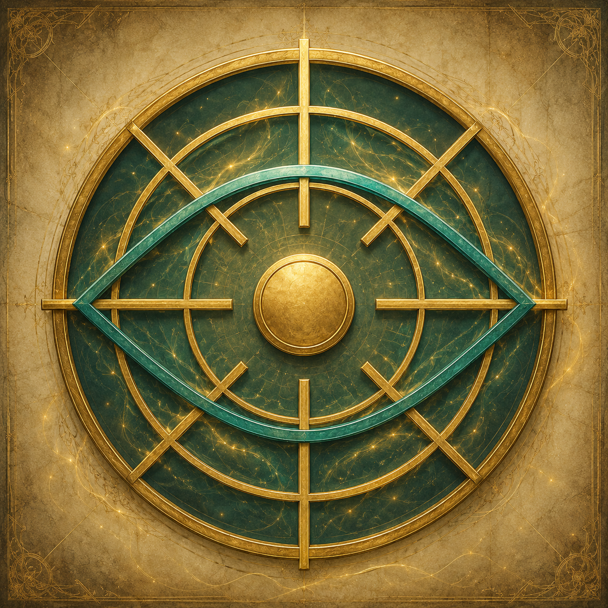
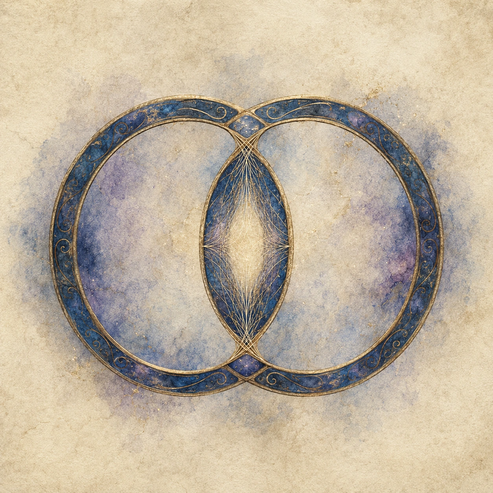

Каждая забирает жизненную силу по-своему. Каждая обещает защиту. Каждая сковывает клятвой, ритуалом или системой, которую нельзя отменить пожеланием.
Выберите две Иерархии, их ранги и, когда требуется, путь развития. Таблица использует те же числовые профили и полные способности, что и NPC Generator.
Сила многих, распределённая ради общего мира. Пять последовательных рангов, общий резерв Воли и коллективная безопасность Западных земель.
Иерархия Единства возникла в Западных землях как попытка сохранить Мир Дракона после Последней Битвы. Мирный договор пережил своих создателей, но с каждым поколением политическое напряжение росло. Совет мира, представители королевств и направляющие создали надгосударственную систему, которая связывает участников через общий энергетический резерв и делает благополучие отдельных народов частью общей безопасности.
Вступление начинается с Единой Клятвы — ритуала на специальном тер’ангриале, сформированном на основе знаний о принципах Клятвенного жезла и кругов Единой Силы. Клятва создаёт устойчивый канал к сети Единства. Через него участник передаёт Взнос Воли — долю собственной жизненной энергии, поступающую в общий резерв. Взнос Воли не ведётся отдельными очками на листе персонажа: его стандартная цена уже выражена механикой I ранга.
Единая Клятва не является контролем разума. Участник может отказаться от приказа, солгать, предать организацию или поддержать мятеж. Нарушение клятвы само по себе не наносит урон и не накладывает состояние. Последствия определяются законами, политикой и процедурами Единства.
Резерв Единства — инфраструктура всей системы, а не личный запас отдельного лидера. При крупномасштабной организованной агрессии он способен перераспределять энергию в пользу защищающейся стороны. Это стратегическая функция мира и войны; сама по себе она не даёт универсального числового бонуса в каждом бою и не накладывает автоматического штрафа на агрессора.

−1 к двум различным характеристикам; −1 к инициативе и ко всем спасброскам.
Предел характеристик 22; +10 хитов; Обратный поток; профиль усиления 2.
Предел характеристик 24; Кости Хитов ×2; Предвидение тактики и Единство Плетений; профиль усиления 5.
Фиксированные +30 хитов; Стойкость Единства, Щит сплочённости и Легендарная решимость; профиль усиления 12.
Интеллект и Мудрость до 26; Кости Хитов ×3; Господство Единой Силы и Единый фронт; профиль усиления 24.
| Ранг | Скорость | Инициатива | Спасброски | СЛ плетений | Доп. применения |
|---|---|---|---|---|---|
| I | без изменения | −1 | −1 ко всем | — | — |
| II | +10 фт | +2 | +1 ко всем | +2 | 2 |
| III | +15 фт | +5 | +2 ко всем; преимущество против эффектов, способных наложить «испуган» | +4 | 3 |
| IV | +20 фт | +5 и преимущество | +3 ко всем; преимущество против эффектов, способных наложить «испуган» | +6 | 4 |
| V | +30 фт | +10 и преимущество | +5 ко всем; иммунитет к «испуган» и «очарован» | +7 | 5 |
Шончанская вертикаль Воли: шесть рангов, личная присяга, Возврат Воли, усиление направляющих и уникальные способности от Имперского приказа до Голоса Императрицы.
Хрустальный Трон — государственная Иерархия Шончанской Империи, где поток жизненной силы и подчинения движется только вверх. Подданный отдаёт часть себя не абстрактному государству, а ступени над собой; вершина собирает Волю миллионов в единую вертикаль.
Обновлённая редакция фиксирует полную шестиступенчатую шкалу, включая V ранг Принца Крови, правила Возврата Воли, отдельную Имперскую СЛ, усиление плетений по типу ангреала/са’ангреала и полный набор ранговых способностей.
| Ранг | Титул | Характеристики и хиты | Скорость | Инициатива | Спасброски | Направляющий |
|---|---|---|---|---|---|---|
| I | Подданный / да’ковале / младший офицер | −1 к двум характеристикам | База | −1 | −1 ко всем | Нет |
| II | Благородный лорд / сул’дам-наставник | +2 к двум; +10 хитов | +10 фт | +2 | +1 ко всем | +1 СЛ; +1 атака плетением; +2 кубика; дальность/область ×1,5 |
| III | Лорд Крови / командир легиона | Ещё +2 к двум; классовая часть хитов ×1,5 | +15 фт | +5 | +2 ко всем; преимущество Телосложения | +2 СЛ; +3 атака плетением; +5 кубиков; дальность/область ×1,8 |
| IV | Наместник / Высокая Кровь | Ещё +2 к двум; предел 22; ещё +20 хитов | +20 фт | Преимущество | +3 ко всем; иммунитет к испугу и очарованию | +3 СЛ; +4 атака плетением; +12 кубиков; дальность/область ×3 |
| V | Принц Крови | Ещё +2 к двум; предел 24 | +25 фт | +10 и преимущество | +4 ко всем | +3 СЛ; +4 атака плетением; +16 кубиков; дальность/область ×3 |
| VI | Император / Императрица | Ещё +2 к двум; предел 24 игрок / 26 уникальный NPC; ещё +80 хитов | +40 фт | +15 и преимущество | +5 ко всем; легендарная устойчивость | +4 СЛ; +5 атака плетением; +24 кубика; дальность/область ×50 |
Преимущество на Запугивание; 1/долгий отдых — Имперский приказ против Имперской СЛ.
Пока хиты выше половины максимума — сопротивление всему немагическому урону; плетения Единой Силы, Аномалия и силовой урон не уменьшаются. После падения до половины хитов или ниже: +1 к атакам и урону до конца боя.
Враги в 30 фт с уровнем/ПО ≤ 3 × ранг совершают СБ Мудрости против Имперской СЛ или становятся испуганными; успех даёт иммунитет на 24 часа.
Иммунитет к состояниям испуган и очарован.
1/долгий отдых, реакция: плетение связанной а’дамом дамане в 30 фт считается сотканным ячейкой на 2 уровня выше, максимум 9.
Сопротивление одному выбранному виду урона: дробящему, колющему или рубящему.
1/долгий отдых: Массовое внушение на 24 часа или Обет принуждения на 30 дней.
Суверенный темп — дополнительное действие в конце чужого хода; или Суверенная защита — до двух реакций до начала следующего хода.
В начале каждого хода восстанавливает 25 хитов, если остаётся хотя бы 1 хит.
Пять последовательных рангов. Страж подавляет Единую Силу, а Хранители отвечают технологиями, служебными кристаллами, физиологической адаптацией и дисциплиной.
Страж — древний тер’ангриал и первичная основа подавления Единой Силы в Фар Мэддинге. Современные Башни Стража усиливают и стабилизируют его поле, но не являются его первоначальным источником.
Гильдия — технологический противовес зависимости от Единой Силы, а не орден направляющих. Штатный член Гильдии не может быть направляющим. Её способности обеспечиваются служебным ранговым кристаллом, физиологической адаптацией, инженерией, кристаллотехникой, алхимией и автономными реликтовыми системами.
Энерговзносы граждан и Хранителей поступают в общую кристаллическую распределительную сеть и накопители города. Это не персональная пирамида, в которой жизненная энергия автоматически передаётся от младших рангов старшим.
| Ранг | Название | Характеристики и хиты | Скорость | Инициатива | Спасброски | Ключевые черты |
|---|---|---|---|---|---|---|
| I | Кадет Хранителей | −1 к двум выбранным различным характеристикам | Без изменения | −1 | −1 ко всем | Первичная адаптация |
| II | Офицер-Хранитель | Новый пакет +2 к двум, предел 20; максимум хитов +10 | +10 фт | +2 | +1 ко всем | Регенерация 3 |
| III | Инженер-Хранитель | Ещё +2 к двум, предел 20; итоговый бонус к максимуму хитов +30 | +15 фт | +5 | +2 ко всем; преимущество Инт/Мдр | Регенерация 5; Тактическое превосходство; Защита Хранителя |
| IV | Советник Гильдии | Ещё +2 к двум, предел 22; итоговый бонус к максимуму хитов +50 | +20 фт | Преимущество | +3 ко всем; преимущество Инт/Мдр | Регенерация 10; Энергетический щит; Адаптация к аномалиям |
| V | Главный Хранитель | Ещё +2 к двум, предел 24; +50 хитов; вклад классовых Hit Dice в максимум хитов ×3 | +30 фт | Преимущество +10 | +5 ко всем; преимущество Инт/Мдр | Регенерация 15; Владыка Стража; Мастер хитрости |
| Ранг | Радиус | Автоподавление | СЛ | Стандартная длительность |
|---|---|---|---|---|
| III | 10 фт | 1-й уровень и ниже | 12 | 1 минута, концентрация |
| IV | 15 фт | 2-й уровень и ниже | 14 | 1 минута, концентрация |
| V | 20 фт | 3-й уровень и ниже | 16 | 1 минута, концентрация |
В начале хода восстанавливает 3/5/10/15 обычных хитов по рангу при 1+ хите и работающем служебном кристалле; вне инициативы — раз в 6 секунд.
Не чаще 1/раунд: перестановка инициативы двух видимых существ в начале раунда либо реакция после хода союзника, позволяющая ему переместиться до половины скорости без расхода его реакции.
+2 КД против бросков атаки и сопротивление урону, непосредственно причинённому плетениями Единой Силы.
Иммунитет к постоянным фоновым негативным свойствам аномальной среды и преимущество на спасброски против эффектов аномалий и плетений; отдельно — Перенаправление всплеска 1/продолжительный отдых.
Управление доступом и Полное подавление — отдельные 60-футовые режимы, каждый 1/продолжительный отдых и до 1 минуты без концентрации. Полное подавление имеет наивысший приоритет.
Реакция 1/раунд при начале действия видимого врага: союзник немедленно совершает одну атаку оружием по этому врагу без расхода своей реакции.
Пять ступеней. Два пути. Жизненная сила миллионов движется снизу вверх, а на V ранге обе ветви снова сходятся в Двойном Сосуде.
Единая Воля Шары — религиозно-кастовая Иерархия, выросшая из шаранской традиции айяд после Последней Битвы. С III ранга система расходится на Путь Айяд и Путь Воина: направляющие соединяют плетения Единой Силы с особой техникой Поглощения Воли, а не-направляющие удерживают тот же ресурс телом, клинком и боевой стойкостью.
Коэффициент Единой Воли умножает только компонент максимума хитов, полученный от Костей Хитов. Бонус Телосложения и иные плоские прибавки добавляются после множителя. Дополнительные плетения как ранговый ресурс в новой редакции отсутствуют.
Шаранская вершина — Двойной Сосуд: Ш'боан и Ш'ботай входят в общий семилетний цикл. Ш'ботай может происходить как с Пути Айяд, так и с Пути Воина; Сосуд сохраняет профиль своего пути.
| Ранг | Ступень | Характеристики | КД | Хиты | Профиль |
|---|---|---|---|---|---|
| I | О / Отдающие | временный −1 Тел | — | −5 к максимуму | отдача Воли; инициатива −1; −1 ко всем спасброскам |
| II | Хранитель Предначертания | новый +2/+2, предел 22 | +2 | Кости Хитов ×1,5 | +1 к СЛ плетений у направляющих; Стойкость Хранителя; Передача Воли |
| III | Накша / Клинок Воли | новый +2/+2, предел 22 | +3 | Кости Хитов ×2 | Айяд +2 к СЛ плетений / Воин +2 к атакам и +1к6 силового |
| IV | Накша-благословенная / Воитель Предначертания | новый +2/+2, предел 24 | +4 | Кости Хитов ×2,5 | Айяд +3 к СЛ плетений / Воин +3 к атакам и +1к8 силового |
| V | Ш'боан / Ш'ботай — Двойной Сосуд | новый +2/+2, предел 26 | +6 | Кости Хитов ×3,5, затем +80 | Сосуд сохраняет профиль своего пути; Сосуд-айяд +5 к СЛ плетений; легендарная регенерация |
Формула хитов. Итог = ⌊компонент Костей Хитов × коэффициент текущего ранга⌋ + бонус хитов от Телосложения + прочие плоские модификаторы. На V ранге после расчёта отдельно прибавляется +80 к максимуму хитов.
Дополнительных плетений нет. Единая Воля не предоставляет дополнительных ячеек, известных плетений или отдельного ресурса применений плетений. Количество ячеек и доступных плетений определяется классом и уровнем персонажа.
Разные логики энергообмена, разные способы роста, одинаковая сцепка: сила приходит через систему; выйти — труднее, чем войти.
| Признак | Единство | Хрустальный Трон | Фар Мэддинг | Единая Воля |
|---|---|---|---|---|
| Логика | Сеть, двунаправленный обмен | Пирамида, только вверх | Распределительная кристаллическая сеть | Религиозно-кастовая пирамида Воли |
| Ступеней | 5 | 6 | 5 | 5 |
| Клятва кому | Принципам Единства, Совету | Лично Императрице | Гильдии и её делу | Единой Воле Шары и Кругам Дара |
| Ценовой механизм | Малый «отток» у Посвящённого | 10–15% потерь у Да’ковале | Служебный кристалл + первичная адаптация I ранга | Ритуальное Поглощение и передача жизненной силы вверх |
| Рост | Заслуги + одобрение Совета | Имперское пожалование + интриги | Экзамены + изобретения | Кастовая служба, ритуалы, испытания и решение Совета Накша |
| Вред соратникам | Запрещён клятвой | Запрещён прямо, но интриги цветут | Строгая дисциплина, голосование | Система оправдывает жертву как сакральную норму |
| Вершина | Несколько Проводников | Одна Императрица | Один Главный Хранитель | Ш’боан и Ш’ботай — Двойной Сосуд |
| При потере лидера | Система перераспределяет | Катастрофа, преемник слабее | Временный руководитель IV ранга; новый V избирается Советом | Семилетний цикл завершает Сосуд и создаёт нового |
Единство — выбор для команды, для тех, кто хочет быть частью большего. Потеря одного лидера не обрушивает систему. Но потолок ниже, чем у пирамиды: Проводник Единства индивидуально слабее Императрицы, потому что энергия делится на нескольких.
Хрустальный Трон — выбор для тех, кто хочет личной власти и готов платить за неё чужой слабостью. Императрица не знает равных. Но разрыв клятвы, поражение столицы, смерть преемницы — и система трещит: низшие слои слишком зависимы, чтобы удержать её самостоятельно.
Гильдия — выбор для тех, кто не верит в чудеса, но верит в работу рук и голову. Ни магии, ни мистики — алхимия, кристаллы, инженерия. Вне города они слабее себя же, но в стенах Фар Мэддинга способны задавить любого направляющего, просто обнулив саму возможность плести.
Единая Воля — выбор для общества, где жертва не считается насилием, если она встроена в сакральный порядок. Шара создаёт самых живучих носителей среди Иерархий, но вершина этой силы сгорает за семь лет.
Фронтирная система Стражей Проходов, Хранителей Окна, Голосов Гребня и Проводников. Она не является великой государственной Иерархией, но задаёт правила выживания у границы нормального мира.
Стражи Проходов, Хранители Окна, Голоса Гребня и Проводники образуют особую фронтирную систему. Её сила не строится на государстве, а на ремесле выживания у Стены, удержании маршрута и охоте на монстров аномалий.
Крик — мигрирующая перманентная аномалия высшего рейтинга. Держащие Равновесие не управляют бурей: они читают маршрут фронта, работают с кварцем, проводят людей через безопасные окна и развивают собственную восьмиранговую Иерархию.
Крик проходит через Землю Безумцев вместе с огромным штормовым фронтом. Его структура, маршрут и остаточный заряд создают вокруг себя не государственную пирамиду, а школу выживания: Держащие Равновесие заранее читают трассу, размечают безопасные зоны, настраивают кварцевые сосуды и применяют силу фронта только в пределах строгих ограничений.
На сайте Иерархия Крика вынесена в отдельную полную страницу, потому что её правила включают собственные ранги, сопротивления, заряды, Настройку Хвоста, осевые закладки, ограничения Проводимости и отдельные боевые способности.
Надгосударственный Орден, который не собирает силу с населения: Стражи закрепляют узловые точки, извлекают избыток энергии временных аномалий и возвращают его в Сферу Узора.
Стражи Узора работают с локальными разрывами Узора, временными аномалиями и последствиями их среды. Их Иерархия возникает после Клятвы Узла и связывает Стража со Сферой Узора, личной Пирамидкой и Цитаделью в Тел’аран’риоде.
В отличие от великих политических Иерархий, Орден запрещает использовать мирных жителей как источник энергии. Рост по рангу означает не право владеть территорией, а допуск к резерву, операциям извлечения и ответственности за закрытие опасных аномальных очагов.

| Ранг | Титул | Постоянные параметры | Направляющий | Ключевая способность |
|---|---|---|---|---|
| I | Страж-послушник | Инициатива −1; прочих числовых бонусов нет. | — | Осознание: чутьё аномалии и оценка силы. |
| II | Страж Узла | +1 к двум характеристикам; +1 атака/урон оружием; скорость +5 фт; инициатива +1; +1 ко всем спасброскам. | +1 СЛ; 1 доп. применение; +1 атака; +1 кубик; ×1,3. | Печать Узла и Боевой импульс Узора. |
| III | Ткач Потока | Ещё +1 к двум; КД +1; скорость +5 фт; инициатива +2; +2 ко всем спасброскам. | +2 СЛ; 2 доп. применения; +2 атака; +3 кубика; ×1,6. | Ключ Цитадели и Сдвиг Нити. |
| IV | Старший Ткач | Ещё +1 к двум; КД +1; атака/урон +2; +20 хитов; скорость +5 фт; инициатива +3; +3 ко всем спасброскам. | +3 СЛ; 3 доп. применения; +3 атака; +5 кубиков; ×1,8. | Протокол Извлечения, Клин Узора, Самостабилизация. |
| V | Чемпион Узора | Ещё +1 к двум; КД +2; атака/урон +2; +40 хитов; скорость +10 фт; инициатива +4; +4 ко всем спасброскам. | +4 СЛ; 4 доп. применения; +3 атака; +6 кубиков; ×2. | Чемпионская Нить, Сверхскорость, Выдача из резерва. |
| VI | Архистраж | Ещё +1 к двум; КД +2; атака/урон +3; +60 хитов; скорость +10 фт; инициатива +5; +5 ко всем спасброскам. | +5 СЛ; 5 доп. применений; +4 атака; +12 кубиков; ×3. | Рука Резерва, Перенаправление Потока, Многорукий. |